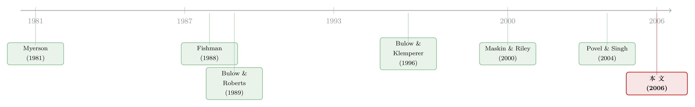

卖公司这件事：为什么最优的玩法，是「故意偏心」
本文读的是 Povel & Singh (2006, Review of Financial Studies)：当几个竞购者对目标公司的了解程度不一样时，卖方不该「一视同仁」地办一场公平拍卖，而应该故意偏心——把胜负的天平向消息更灵通的买家倾斜。更妙的是，这套最优机制能用一个我们在现实里天天见到的程序实现：先和强者谈独家，谈不拢再开拍卖或转身卖给弱者，最后用「交易保护装置」把它焊死。
1 一个反直觉的开场
先问一个看上去答案显而易见的问题：如果你要把一家公司卖掉，是不是抢的人越多越好？
直觉会立刻点头。多一个买家，就多一份竞争，价格就该被往上顶。教科书里的拍卖理论也大体支持这种朴素的乐观——「竞争是卖方的朋友」几乎是一句口号。于是现实里我们看到，越来越多的公司在出售时干脆宣布自己正在「评估战略选择」（evaluating strategic alternatives），这句话翻译过来就是：欢迎各方来竞价。
可现实并不总是这么配合。设想一桩管理层收购 (management buyout, MBO)：目标公司的高管团队亲自下场报价。他们对这家公司的家底了如指掌，比任何一个外部买家都清楚它到底值多少钱。再设想一个同行竞争对手来竞购——他评估这家公司的本事，也远胜过一个从没干过这行的财务投资人。
这时候，那个消息不灵通的买家心里会打鼓：万一我出价赢了一个比我懂行得多的对手，是不是恰恰说明我把价钱出高了？这就是著名的 赢家诅咒 (winner's curse)——赢了，反而是吃了亏。于是他会本能地往后缩，把出价压低以自保。
注意这里的连锁反应：信息上的不对称，会让弱势买家因为害怕赢家诅咒而主动收手。竞争被悄悄掐灭了。这时候「多找几个人来抢」根本不灵——人是来了，可没人敢真抢。
于是问题就变得有意思了。Povel 和 Singh 在这篇 2006 年的 RFS 文章里追问：当买家们并非同样灵通时，一家公司到底该怎么卖？ 而他们给出的答案，恰恰是开头那个朴素直觉的反面——卖方非但不该追求公平，反而应该蓄意地偏心。
2 偏心，到底偏的是什么
要理解「偏心」为什么是好事，得先想清楚卖方在这场游戏里到底想榨取什么。
买家之所以愿意进场，是因为他指望以低于自己估值的价格买到公司，从而赚一笔差价——这笔差价，机制设计的术语叫「租金」（rents）。这里有一条关键的逻辑链：一个买家的信号越精确，他能预期赚到的租金就越大。道理不难——你对一样东西的价值看得越准，你就越有把握只在「真便宜」的时候出手，越能稳稳地赚到那块差价。
那么卖方的目标，就是尽可能多地把买家口袋里的这块租金抠出来。而既然消息灵通的那个买家（下文称 bidder 1）有本事赚到更大的租金，卖方理所当然应该首先盯着他下手。
这就是「偏心」的全部动机。最优机制会做两件看似矛盾的事：
- 当 bidder 1 的出价意愿很高时，机制会抬高他赢的概率——高到一旦他的估值越过某个上界，他就必赢无疑；
- 当 bidder 1 的出价意愿很低时，机制会抬高他输的概率——低到一旦他的估值掉到另一个（更低的）下界之下，他就必输无疑，哪怕弱势买家其实出不起更高的价。
这种「上必赢、下必输」的安排听上去蛮横，可它的用意非常精明：逼 bidder 1 报出高价。如果不给他这份额外的激励，他大可以仗着自己信息好，慢悠悠地用一个相对自己估值低得多的价钱把公司买走，把租金全揣进自己兜里。机制要做的，就是不让他舒舒服服地占这个便宜。
一句话记住这篇文章的灵魂：买家越不对称，最优机制就越偏心。 当 bidder 1 的信息优势越大，他要么独享一桩排他交易、要么干脆被踢出局的可能性就越高。
3 模型：把「信息有多好」拆成两个旋钮
接着，一个自然的问题是：怎么把「信息不对称」这件事，干净地写进一个能求解的模型里？这篇文章的设定很优雅，它用两个旋钮就同时刻画了「私人价值 vs 共同价值」和「谁更灵通」两个维度。
一家目标公司待售，两个买家 \(i,j\in\{1,2\}\)。每个买家的「完全信息价值」是两个独立分量 \(t_1\) 与 \(t_2\) 的加权平均：
$$\text{bidder 1: } \;\alpha\, t_1 + (1-\alpha)\, t_2, \qquad \text{bidder 2: } \;\alpha\, t_2 + (1-\alpha)\, t_1.$$
这里的第一个旋钮是权重 \(\alpha\in[\tfrac12,1]\)：
- \(\alpha=1\) 时，bidder 1 只在乎 \(t_1\)、bidder 2 只在乎 \(t_2\)，两人估值互不相干——这是 纯私人价值 (private values) 的世界。现实里对应贸易买家：竞争对手、供应商、客户，各自能挖到别人挖不到的协同效应。
- \(\alpha=\tfrac12\) 时，两人对公司的估值完全一样、只是都不知道究竟值多少——这是 纯共同价值 (common values)。现实里对应财务买家：私募基金们都靠裁员、卖非核心资产、调整杠杆来增值，蛋糕是同一块，只是谁看得更准。
- \(\alpha\in(\tfrac12,1)\) 时，两种成分都有。
\(t_1,t_2\) 在区间 \([\underline t,\overline t]\) 上独立同分布，密度 \(f\)、分布 \(F\)，风险率 (hazard rate) 记为 \(H(t)=f(t)/(1-F(t))\)，并假定它单调递增（这是机制设计里保证「规整性」的标准技术假设）。再把卖方自己对公司的估值标准化为零，并假定 \(\underline t\,H(\underline t)\ge 1\)（这条只是为了让卖方永远愿意成交，省去保留价的麻烦）。
第二个旋钮，藏在信号的质量里。买家 \(i\) 只能私下观测到一个关于 \(t_i\) 的、可能掺了水的信号 \(s_i\)：
$$s_1 = \begin{cases} t_1 & \text{with prob. } \phi,\\[2pt] \varepsilon_1 & \text{with prob. } 1-\phi, \end{cases} \qquad s_2 = \begin{cases} t_2 & \text{with prob. } \psi\phi,\\[2pt] \varepsilon_2 & \text{with prob. } 1-\psi\phi. \end{cases}$$
其中 \(\varepsilon_1,\varepsilon_2\) 是与 \(t_1,t_2\) 同分布的纯噪声。所以：bidder 1 的信号有 \(\phi\) 的概率是「真货」、\(1-\phi\) 的概率是噪声；bidder 2 的信号则只有 \(\psi\phi\) 的概率是真货。关键就在这个 \(\psi\)：当 \(\psi<1\) 时，bidder 2 的信号系统性地更不可靠——他就是那个消息不灵通的买家。（\(\psi=1\) 时两人对称，正是经典拍卖文献研究的情形，那时一场对称的拍卖就够了。）
如果两个信号都能被看到，按贝叶斯法则更新后，两人的条件期望价值是：
$$v_1(s_1,s_2)=E[t]+\phi\alpha\,(s_1-E[t])+\psi\phi(1-\alpha)\,(s_2-E[t]),$$ $$v_2(s_1,s_2)=E[t]+\phi(1-\alpha)\,(s_1-E[t])+\psi\phi\alpha\,(s_2-E[t]).$$
这两个式子里 \(E[t]\) 是 \(t\) 的无条件期望。值得一提的是，调 \(\alpha\)、\(\psi\) 或 \(\phi\) 都不改变买家对公司的无条件期望价值——它们只改变信号能在多大程度上把这份价值「锁定」下来。两个旋钮，调的全是信息结构，而非公司本身值多少。
4 把拍卖翻译成「垄断者的定价」
模型搭好了，但真正关键的一步在于：怎么求解这个最优机制？直接上 Myerson (1981) 的机制设计当然可以，但证明又臭又长。文章走了一条更轻盈的路——Bulow & Roberts (1989) 与 Bulow & Klemperer (1996) 的「边际收益」捷径。
这个翻译的妙处在于：一场拍卖，在数学上等价于一个垄断者在多个市场上做三级价格歧视。对应关系是这样搭的——
- 一个买家 = 一个市场；
- 买家的估值 \(v_i\) = 这个市场里的「价格」；
- 买家「估值高于某个值」的概率 \(1-F(s_i)\) = 这个市场里能卖出去的「数量」。
价格乘数量，就是从这个买家身上能榨出的期望收入 \(v_i\cdot(1-F(s_i))\)。而垄断者的决策法则人人都懂：只要边际收益 (marginal revenue) 高于边际成本，就该多卖；产能有限时，就把货优先投给边际收益最高的那个市场。卖方在拍卖里要做的，无非是把「赢的概率」这份稀缺产能，分配给边际收益更高的那个买家。卖方自己的估值已经标准化为零，所以边际成本就是零。
对期望收入求导，得到两个买家各自的边际收益：
$$MR_1(s_1,s_2)=v_1(s_1,s_2)-\frac{\phi\alpha}{H(s_1)},$$ $$MR_2(s_1,s_2)=v_2(s_1,s_2)-\frac{\psi\phi\alpha}{H(s_2)}.$$
这两个式子是整篇文章的引擎，值得把它的零件拆开看一眼：
第二项 \(\phi\alpha/H(s_1)\) 就是那块信息租金——它是卖方为了让 bidder 1 不撒谎、老老实实报出真信号而必须付出的代价。\(\phi\) 越大（信号越准），这块租金越厚。这恰恰从数学上印证了第 2 节那句话：信息越好的买家，租金越大，也越值得卖方优先去抠。 注意 \(MR_2\) 的租金项里多了一个 \(\psi\)：bidder 2 信息差，他的租金也薄，本就没多少可榨。
接下来是漂亮的代数。卖方要做的是比较 \(MR_1\) 和 \(MR_2\) 谁更高。把上面 \(v_1,v_2\) 代进去，定义一个辅助函数
$$\Gamma(s_i)\;\equiv\;\frac{2\alpha-1}{\alpha}\,(s_i-E[t])\;-\;\frac{1}{H(s_i)},\qquad i=1,2,$$
经过一番整理（除以 \(\phi\)、合并同类项、再除以 \(\alpha\)），那一长串不等式 \(MR_1>MR_2\) 会奇迹般地坍缩成一行极其干净的比较：
$$MR_1(s_1,s_2)>MR_2(s_1,s_2)\quad\Longleftrightarrow\quad \Gamma(s_1)>\psi\,\Gamma(s_2).$$
这一行，就是「偏心」的数学化身。 如果两人完全对称（\(\psi=1\)），判据就是 \(\Gamma(s_1)>\Gamma(s_2)\)——谁信号高谁赢，公平。可一旦 \(\psi<1\)，那个 \(\psi\) 就像一只压在天平一端的手：它把 bidder 2 的「调整后剩余」\(\Gamma(s_2)\) 缩了水，使得 bidder 1 哪怕信号没那么突出，也更容易在这场比较里胜出。卖方的偏心，全写在这个 \(\psi\) 里。
由于 \(\Gamma\) 关于 \(s_i\) 单调递增，它有反函数 \(\Gamma^{-1}\)。于是可以为 bidder 1 定义一条门槛信号：
$$z_1(s_2)\;\equiv\;\Gamma^{-1}\!\big(\psi\,\Gamma(s_2)\big).$$
结论一句话：当且仅当 \(s_1\ge z_1(s_2)\) 时，把公司卖给 bidder 1。（这就是文章的 Lemma 1。）
5 最优配置：一条会「拐弯」的门槛线
有了门槛函数 \(z_1\)，最优配置规则的全部性质都藏在它的形状里（Lemma 2）。
\(z_1\) 单调递增——这很合理：bidder 2 的信号越高，要把公司判给 bidder 1 所需的门槛也越高。但更有意思的是它的两端。当存在私人价值成分（\(\alpha>\tfrac12\)）时：
- 在 \(s_2=\underline t\) 处，门槛 \(z_1(\underline t)>\underline t\)：哪怕 bidder 2 信号最低，bidder 1 也得拿出高于对方信号一截的成绩才能赢——这正是对 bidder 1 的「加码」。
- 同时存在一个上界 \(z_1(\overline t)<\overline t\)：bidder 1 的信号一旦足够高（\(s_1\ge z_1(\overline t)\)），无论 bidder 2 怎么样，他都必赢；信号一旦足够低（\(s_1< z_1(\underline t)\)），他都必输。
- 中间还有唯一一个不动点 \(s_2=\beta\) 满足 \(z_1(\beta)=\beta\)：在它之上门槛低于对角线、之下高于对角线，门槛线就这样从对角线一侧「拐」到另一侧。
而在纯共同价值（\(\alpha=\tfrac12\)）下，画面变了：上界塌缩，没有任何信号能保证 bidder 1 必赢（\(z_1(s_2)\) 永远不小于 \(s_2\)）；但总存在让他必输的低信号。换句话说，共同价值的世界里，赢家诅咒的阴影最浓，机制对强者的「保护」也最克制。
这张「门槛线拐弯」的图（论文的 Figure 1，横轴是 bidder 2 的信号、纵轴是 bidder 1 的信号）是全文最直观的一幅画：一条向上倾斜的实线把平面切成两半，线上方 bidder 1 赢、下方 bidder 2 赢，而线在两端「拍平」成的水平/竖直段，就是「必赢区」和「必输区」。本次推送未附该图，感兴趣的读者可对照原文第 1408–1409 页。
6 反转：抽象的机制，怎么长成了现实的样子
到这里，我们手上只有一个抽象的「最优配置规则」——它告诉你谁该赢，却没说该怎么把它实现出来。于是反转出现了：Povel 和 Singh 证明，这套看上去蛮横的偏心规则，可以由一个序贯程序精确实现，而这个程序简直就是从并购实务里照抄下来的。
程序是这样跑的：
- 先谈独家。 目标公司只和消息灵通的 bidder 1 接触，完全不理会 bidder 2。如果 bidder 1 愿意出一个足够高的价，交易当场拍板，连第二个买家的影子都不会出现——这正对应着第 5 节那个「必赢区」。现实里，这就是常见的排他性谈判，很多管理层收购就这么悄悄成交了。
- 谈不拢，就问一句狠话。 如果 bidder 1 给的价不够高，目标公司会问他：你愿不愿意在接下来可能举行的竞价里，至少出到某个最低数？
- 若他不愿，就转身卖给弱者。 这时公司被以一个 bidder 2 不会拒绝的价格直接卖给消息不灵通的 bidder 2——对应「必输区」。
- 若他愿意，就开拍卖。 目标公司邀请各方报价，举行一场改良的第一价格拍卖（modified first-price auction），赢家按自己报的价付钱——对应中间那段「谁信号高谁赢」的拐弯区。
这套程序最迷人的地方，是它给「偏心」找到的实现手段。回想机制要逼 bidder 1 报高价，靠的是什么？传统拍卖会设一个 保留价 (reserve price)：报价低于它，公司就撤拍、不卖了。可这里卖方用的不是保留价，而是一句威胁——「你不出够，我就卖给那个弱的。」
这两招的差别一目了然：保留价意味着把公司从市场上撤回，万一真撤了，那是彻头彻尾的低效率（公司没卖出去，价值白白损失）；而「卖给弱者」的威胁哪怕真的兑现，弱势买家好歹也会付一个说得过去的价。用一个可信的次优买家替代「撤拍」，正是这套序贯程序对保留价的胜出之处。
7 软肋：理论焊不住的那两道缝——承诺
但真正关键的一步，也是这篇文章最贴近现实的洞见在于：上面那套程序要奏效，卖方必须能说话算话。一旦无法承诺，程序就会从两个地方裂开。
第一道缝，在卖之前。 假设和 bidder 1 的独家谈判失败了（他出价意愿低）。按规则，目标公司此刻该转身去把公司以一个不高的价卖给 bidder 2。可董事会一看：何必呢？不如回头重新谈判，再去敲 bidder 1 一笔。问题是——如果 bidder 1 预见到卖方会这么干，那句「卖给弱者」的威胁从一开始就不可信，整套激励就垮了。文章指出，现实中卖方确实有办法把话焊死：雇一家投资银行来操盘，等于「租用」了投行那份「从不重新谈判」的声誉。
第二道缝，在赢家定下之后。 输家（loser）对公司的估值，可能其实高于赢家按规则要付的价钱。于是输家会动心思：我出个更高的价，把这桩交易搅黄、抢过来。这时候卖方不仅需要董事会守约，还需要股东守约——因为一个「敌意」的高价，往往是直接冲着股东去的。
这正是各种 交易保护装置 (deal protection devices) 登场的地方：锁定协议 (lock-ups)、分手费 (termination fees)、禁止兜售条款 (no-shopping clauses)、以及有选择地解除毒丸 (poison pills)。它们的共同作用，是让目标公司对被拒绝的买家变得不那么有吸引力，从而压低后者「加价搅局」的冲动。
法院恰恰卡在这里左右为难：这些装置在事前（ex-ante）是有益的（它们让序贯程序可信，从而抬高成交价、对股东有利），可在事后（ex-post）又像是在剥夺股东接受更高价的权利。Delaware 最高法院在 Omnicare v. NCS Healthcare（818 A.2d 914, Del. 2003）一案中，就判定一份「绝对锁定」（absolute lock-up）构成对受信义务的违反；而更早的一些判决却支持过类似安排。Povel 和 Singh 的立场很明确：法院应当更多地看到这些装置在事前的价值。
（关于分手费这类装置在并购竞价里究竟是「锁门」还是只是「关灯」，以及一份被坏数据带偏二十年的实证公案，可参见《终止费到底是「锁门」还是「关灯」？》；至于目标公司高管在谈判桌底下如何「自己给自己发薪」，又见《最后一分钟的两百万股期权》。）
8 文献脉络
这条研究的源头，要追到机制设计的奠基之作。Myerson (1981) 第一个用机制设计求解最优拍卖，并在一个例子里点出：买家的不对称会导致一个不对称的最优机制——但他没有进一步追问，这种不对称对成交价、对各买家的胜率究竟意味着什么。Bulow & Roberts (1989) 随后把 Myerson 的繁琐证明「翻译」成了垄断者多市场定价的语言，正是本文借用的那把「边际收益」尺子。

另一条线来自并购本身。Fishman (1988) 第一个把收购建模成两个买家之间的竞价博弈，用来解释为什么首轮报价的溢价那么高；此后 Bhattacharyya (1992)、Daniel & Hirshleifer (1992)、Burkart (1995)、Singh (1998)、Bulow, Huang & Klemperer (1999) 等人沿着「应用拍卖」的路子刻画收购竞价。但这些模型有一个共同的盲点：目标公司是被动的——它只是站在那里被竞价，而不去设计游戏规则。
把两条线拧到一起、并让目标公司「活」过来，正是本文的位置。它最近的两位邻居是：Maskin & Riley (2000) 证明了在买家不对称时，标准拍卖（公开拍卖、第一价格拍卖等）都不可能最优；Bulow & Klemperer (1996) 则在「拍卖 vs 谈判」的框架里给了本文最直接的工具。再加上作者自己的 Povel & Singh (2004)——那篇短文在纯共同价值下证明了「买家越不对称、成交价越高」，本文的 Proposition 5.1 把这一结论推广到了更一般的设定。一句话，本文站在 Myerson 的机制设计与 Fishman 的收购竞价之间，补上了「主动设计出售程序」这块拼图。
9 评论与延伸（Q&A + 研究方向）
(a) 几个可能的疑问
Q：「竞争是卖方的朋友」难道错了吗？为什么这里反而要偏心？
这句话在对称买家、私人价值的经典世界里没错。本文打破的前提是「对称」：一旦弱势买家因怕赢家诅咒而缩手，名义上的竞争就不再转化为真金白银的高价。偏心不是为了减少竞争本身，而是为了重新分配赢的概率，把激励精准地压到那个最有租金可榨、也最有能力报高价的强者头上。
Q：这和单纯设一个高保留价有什么本质区别？
保留价是用「撤拍」来威胁，兑现起来纯属低效率——公司没卖掉，价值蒸发。本文用「转身卖给弱者」来威胁，兑现时弱者仍会付一个像样的价。两者都能逼强者报高价，但后者的「惩罚」对卖方而言代价小得多。这是序贯程序优于一刀切保留价的核心理由。
Q：\(\alpha\) 和 \(\psi\) 到底分别管什么？会不会混在一起？
不会，这正是模型设定的精巧处。\(\alpha\) 管的是价值的性质（私人价值 ↔ 共同价值），\(\psi\) 管的是信息的对称程度（谁更灵通）。两个旋钮正交：你可以有一个共同价值、但信息高度不对称的世界（财务买家 + 内部人），也可以有私人价值、却信息对称的世界。机制的偏心程度主要由 \(\psi\) 决定，而赢家诅咒的浓淡由 \(\alpha\) 决定。
Q：「先和强者谈独家」看上去是在向强者让利，这怎么会是榨取租金的最优解？
表面让利，实则设套。独家谈判给了强者一个「必赢区」，但代价是他必须出到足够高的价才能踏进这个区；够不着，就被门槛线推向「必输区」、把公司让给弱者。换言之，独家权是卖方用来「钓」高价的诱饵，而不是无条件的恩赐。
Q：模型假定「谁是强者」是公开信息，这现实吗？
多数情况下算合理——高管下场、或一个近邻竞争对手与外行同场竞价时，谁信息更好往往藏不住。文章在第 5.2 节专门分析了买家谎报自己信息质量的动机，以及这如何影响成交价与各方收益，算是对这个假设的一道补丁。
Q：为什么承诺问题这么要命，甚至牵扯到法院？
因为这套机制的威力全建立在「卖方说话算话」之上：威胁不可信，激励就归零。而承诺在两个时点都可能崩——卖之前想回头敲强者一笔，卖之后输家想加价搅局。交易保护装置就是把承诺「物理焊死」的工具，可它在事后又像在损害股东利益，于是法律必须在事前效率与事后灵活之间裁决。本文的规范立场是：别只盯着事后，多看看事前。
(b) 几个可能的研究问题与提案
1. 公司债一级发行里的「不对称买家」与序贯配售。 【经济故事】公司债的簿记建档 (bookbuilding) 中，不同机构对发行人的了解天差地别——主承销商的核心客户、长期持有人 vs 边缘账户。承销商是否在用类似本文的「先谈核心、再放开」的序贯逻辑分配份额、诱导高价？这能把「偏心是最优」的理论搬到信用市场。 【可行性】中。需要一级发行的配售明细（部分国家监管披露）+ 二级 TRACE 成交。识别难点在于配售决策的内生性，可考虑用承销商—客户关系强度做工具变量。
2. 跨境并购中，目标公司是否系统性偏向「本土（信息更好）」买家。 【经济故事】外资买家对目标的了解通常弱于本土买家（语言、监管、行业网络），正是本文里那个怕赢家诅咒的 bidder 2。模型预言：目标会偏向本土强者，外资要么被排除、要么需付更高价才能赢。 【可行性】中高。SDC/Refinitiv 跨境并购样本充足，可比较本土 vs 外资买家的中标率与溢价，并用目标所在行业的信息环境（分析师覆盖、披露质量）做横截面切分。难点是控制协同效应本身的差异。
3. Omnicare 判例冲击下，交易保护装置受限是否降低了成交溢价。 【经济故事】本文预言交易保护装置有事前价值——它们让序贯程序可信、从而抬高成交价。若某次司法冲击（如 Omnicare 对绝对锁定的否定）外生地限制了这些装置的使用，成交溢价应当下降。 【可行性】中。以判例时点做 双重差分 (difference-in-differences, DiD)，比较受影响 vs 不受影响的交易结构。难点是判例效应的渐进性与各州法律差异，需要谨慎处理交错处理。
4. 把「卖给弱者的威胁」类比到资产清算中的持有人结构与成交价。 【经济故事】在公司债的大宗清算或火线甩卖里，潜在接盘方对资产的了解也不对称。卖方（或做市商）能否通过「先问灵通买家、再威胁卖给次优买家」来抬高清算价？这把本文的机制接到了流动性与 fire sale 的文献上。 【可行性】低-中。理论迁移直接，但现实中清算往往时间紧迫、缺乏精细的报价数据，识别「序贯威胁」是否真在发生很难。更可能先做成一个理论扩展，而非实证。
我的判断
这篇文章的贡献，是把一个被并购竞价文献长期当作「背景板」的卖方，请到了舞台中央。它没有停留在「不对称买家让标准拍卖失效」（那是 Maskin & Riley 已经说清的），而是进一步问出最优程序长什么样，并且——这才是真正动人的地方——证明那个最优程序竟与现实中的排他谈判、改良拍卖、交易保护装置一一对应。理论与实务在这里严丝合缝，是这类机制设计论文里少见的。同时把私人价值与共同价值统一在一个 \(\alpha\) 旋钮下，也让结论的适用面比前作宽了一截。
要说对它的保留，主要有两点。其一是承诺这个软肋被文章自己点破，却也成了它对现实解释力的边界：模型的最优性高度依赖卖方说话算话，而现实里董事会、股东、法院的多方博弈远比「租一家投行的声誉」复杂——交易保护装置究竟在多大程度上真的提升了事前价值，最终是个实证问题，而非理论能独力回答的。其二是「强者身份公开」这一假设：第 5.2 节的谎报分析是好补丁，但当信息优势本身不可观测、甚至可以伪装时，谁该被「偏心」就不再清楚，机制的可操作性会打折。
我最想看到的后续，是把这套「偏心最优」的逻辑拉到信用市场去检验——无论是公司债一级发行的份额分配，还是困境资产的清算定价。如果能在数据里看到卖方/承销商确实在用「序贯威胁」榨取信息租金，那将是对这篇纯理论文章一次有力的现实加冕。
参考文献
Bulow, J., and J. Roberts (1989). The Simple Economics of Optimal Auctions. Journal of Political Economy 97(5), 1060–1090.
Bulow, J., and P. Klemperer (1996). Auctions versus Negotiations. American Economic Review 86(1), 180–194.
Bulow, J., M. Huang, and P. Klemperer (1999). Toeholds and Takeovers. Journal of Political Economy 107(3), 427–454.
Cantillon, E. (2000). The Effect of Bidders' Asymmetries on Expected Revenue in Auctions. Cowles Foundation Discussion Paper 1279, Yale University.
Dasgupta, S., and K. Tsui (2003). A 'Matching Auction' for Targets with Heterogeneous Bidders. Journal of Financial Intermediation 12(4), 331–364.
Fishman, M. (1988). A Theory of Pre-emptive Takeover Bidding. Rand Journal of Economics 19(1), 88–101.
Maskin, E., and J. Riley (2000). Asymmetric Auctions. Review of Economic Studies 67(3), 413–438.
Myerson, R. (1981). Optimal Auction Design. Mathematics of Operations Research 6(1), 58–73.
Povel, P., and R. Singh (2004). Using Bidder Asymmetry to Increase Seller Revenue. Economics Letters 84(1), 17–20.
Povel, P., and R. Singh (2006). Takeover Contests with Asymmetric Bidders. Review of Financial Studies 19(4), 1399–1431.
Shleifer, A., and R. W. Vishny (1986). Greenmail, White Knights, and Shareholders' Interest. Rand Journal of Economics 17(3), 293–309.